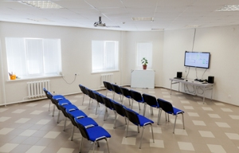
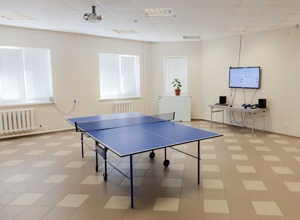
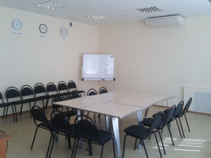
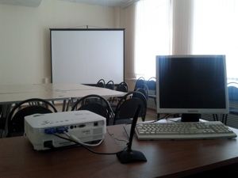
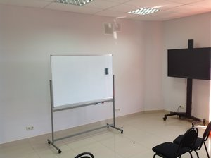
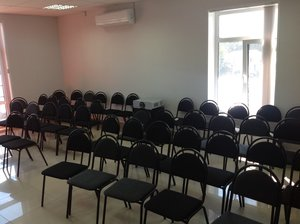

Компания JackNyfe (Echo) предлагает свой конференц-зал, вмещающий 25—30 человек, и широкий спектр возможностей для комфортного проведения докладов, семинаров, конференций и встреч. Зал оснащен экраном, качественным звуком, микрофонами, что дает возможность проведения вебинаров, а также имеется видеопроектор и доска для записей. В перерывах устроим кофе-брейк или поедание пиццы.


Сан-узел в шаговой доступности.
Нюанс: электронная пропускная система на входе.
Время проведения мероприятий согласовывается индивидуально.
Контактное лицо:
Наташа Иванова
Cell: +7 (937) 873 7378
Компания ООО «СимбирСофт» располагает отличным офисным помещением для проведения докладов, семинаров и встреч. Помещение Meeting Room рассчитано на 25 человек, оснащено компьютером, видеопроектором, экраном, звуковыми колонками, микрофоном и доской для записей, а также столами и стульями для размещения докладчиков и гостей.


На этаже есть место для проведения кофе-брейка, санузел.
Другие особенности: на двери этажа кодовый замок.
Время проведения мероприятий согласовывается в индивидуальном порядке.
Контактное лицо:
Алексей Колесников
Cell: +7 903 339 5060
Work: 44-66-91 (22)
Время проведения — любое до 22.00.
Адрес: г. Ульяновск, ул. Северный Венец, 32
В зависимости от предполагаемого количества участников и формата улкампов можно использовать следующие аудитории:
Контактное лицо:
Кирилл Святов
http://www.facebook.com/hibers
http://vk.com/hiber
Компания Undev предлагает свой конференц-зал для проведения докладов, семинаров, конференций и встреч.
Вместимость: 50 человек.
Оснащение: проектор, маркерная доска, видео-панели.


Контактное лицо:
Александр Афанасьев
Cell: +7 905 036 0126